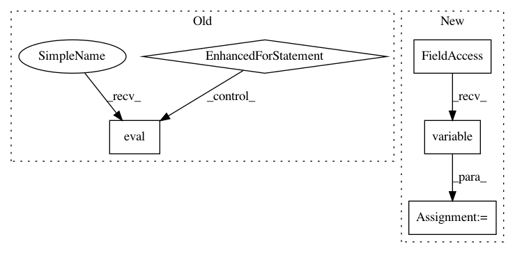

ae72ea0bfe7f7041d6f7580427fa1f69158bab7e,tests/keras/backend/backend_test.py,TestBackend,test_rnn_no_states,#TestBackend#,665
Before Change
last_output_list = []
outputs_list = []
for k in BACKENDS:
rnn_fn = rnn_step_fn(k)
inputs = k.variable(input_val)
initial_states = []
last_output, outputs, new_states = k.rnn(rnn_fn, inputs,
initial_states,
go_backwards=False,
mask=None)
last_output_list.append(k.eval(last_output))
outputs_list.append(k.eval(outputs))
assert len(new_states) == 0
assert_list_pairwise(last_output_list, shape=False)
assert_list_pairwise(outputs_list, shape=False)
@pytest.mark.parametrize("x_np,axis,keepdims", [
After Change
_, x = parse_shape_or_val((32, timesteps, input_dim))
_, wi = parse_shape_or_val((input_dim, output_dim))
x_k = K.variable(x)
wi_k = K.variable(wi)
def rnn_fn(x_k, h_k):
assert len(h_k) == 0
In pattern: SUPERPATTERN
Frequency: 3
Non-data size: 5
Instances
Project Name: keras-team/keras
Commit Name: ae72ea0bfe7f7041d6f7580427fa1f69158bab7e
Time: 2018-03-05
Author: me@taehoonlee.com
File Name: tests/keras/backend/backend_test.py
Class Name: TestBackend
Method Name: test_rnn_no_states
Project Name: keras-team/keras
Commit Name: c2244d2a4cb5f86968fb117f75469283a19b8a24
Time: 2018-10-21
Author: gabrieldemarmiesse@gmail.com
File Name: tests/keras/backend/backend_test.py
Class Name: TestBackend
Method Name: test_sparse_dot
Project Name: keras-team/keras
Commit Name: 907e8035656b0597a7a2f3cc1bf237a8cbf48821
Time: 2018-08-21
Author: me@taehoonlee.com
File Name: tests/keras/backend/backend_test.py
Class Name: TestBackend
Method Name: test_one_hot